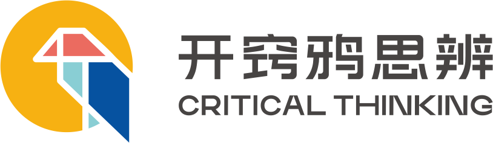

档案智能体
教师独立档案库 · 原型 v0.6
登录
7 位老师 · 初始密码 kaiqiaoya
管理员：zhaobowen / songzhuo / wangkang
教师：yanzibo / xiaoxin / liuchang / wuyao
首次登录，请修改密码
统一初始密码不安全，改完才能进入系统
保存并进入
使用前请知悉
规则与边界 · 每次登录都会显示
这个工具只在
课后
使用，不会出现在课堂上。
它只做记录和整理：
不评对错、不给标准答案、不评价孩子的立场
。
孩子没发言
不会
被记成能力低；看不清的发言会标灰，不会被打低分。
孩子只说「两边都有道理」而没给出具体判断，
不会
被记为进步，会标为「待引导」。
系统不做孩子之间的排名比较。
发给家长的所有内容，必须由你
亲自审阅、修改并签发
后才会发出。
课堂板书与档案保留
最近 11 个月
；每年生成一份
年度快照
长期保存，用于保留长程轨迹。
管理员查看任意班级档案会
留下访问记录
，可在「访问日志」中查看。
学员档案
不跟随班级
：改名、转班、升学期、换老师，档案都连续；删除只进回收站，可恢复。
我已了解